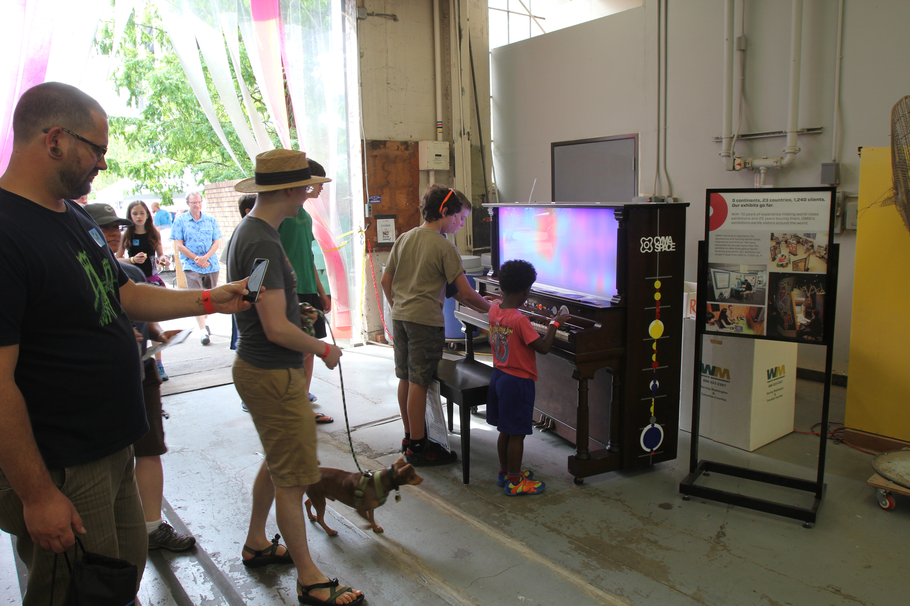

From September 16 to 17, 2017, CymaSpace will come back to Portland Mini Maker Faire. Hosted by the Oregon Museum of Science & Industry (OMSI), CymaSpace will take part in this event as one of the makers presenting their Cymatic experiments.
Maker Faire is a gathering of curious people of all ages who are passionate about learning and sharing what they can do. From engineers to artists to scientists to crafters, Maker Faire is a venue for these “makers” to show hobbies, experiments, and projects.
At the Maker Faire, CymaSpace will be presenting their light sculptures and educating the guests on the Cymatic technology. In addition, guests will be able to construct their own pieces of LED pixel art.
CymaSpace is currently looking for volunteers. There are opportunities to get involved and assist by volunteering at the booth outside of the OMSI building. If you are interested in volunteering for this event, please contact us at .
Come join us and experience the technology of CymaSpace!